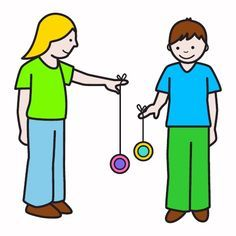

Asesoría y organización de eventos recreativos/deportivos.
COPA PATAIN

Organización y supervisión de los Juegos Laborales, Juegos Tradicionales de la Parroquia de Panzaleo.
Gimnastrada Patain.
Festivales de destrezas para la captación de talentos.
Implementación de proyectos especiales deportivos en zonas rurales del país
Asesorar a los gobiernos locales en la implementación y ejecución de las escuelas deportivas.
Actividades Deportivas para el Adulto Mayor.